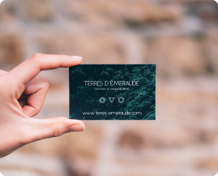
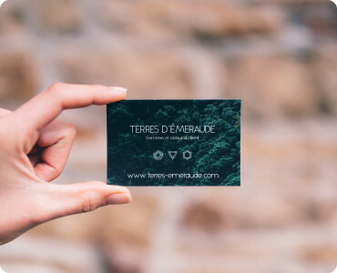

Іконки
Іконки - це векторні зображення, тобто вони складаються не з пікселів, а з ліній і мають формат SVG.
Завдяки цьому при
збільшенні такої іконки, її якість ніяк не зменшується. Здебільшого іконки виступають в ролі декоративних
елементів і тільки доповнюють основний контент, тому малоймовірно, що їх потрібно буде змінювати, а відтак
задаємо їх через властивість background: в CSS файлі.
Однак, існують й контентні іконки. Такі іконки швидше за все доведеться змінювати разом з контентом до якого
вони належать, тому прописуємо їх через тег <img> в HTML файлі. Часто це можуть бути
логотипи компаній, але далеко не завжди.
Контентні зображення
Контентні зображення зазвичай являють собою растрові зображення формату JPEG / PNG (WebP). Такі зображення,
є піксельними, а тому будуть втрачати якість, якщо сильно збільшувати їх оригінальне розширення. Ці
зображення є прям контентом сайту, а тому можуть змінюватися і для цього нам потрібно задавати їх через тег
<img> в HTML файлі.
При інтеграції таких зображень в нашу верстку для нас є важливим розмір файлів, тобто маса. Тому в більшості випадків ми будемо використовувати формати JPEG, так як він добре передає кольори і при цьому менше займає, ніж PNG формат. Однак, якщо необхідно, щоб зображення було прозорим, то доведеться таки скористатися форматом png. Однак, існують спеціальні сервіси, які допомагають нам оптимізувати розміри зображень, тому варто скористатися такими перед додаванням зображень у верстку. Крім того, гугл створив новий формат - WebP, для подальшої оптимізації.
Алгоритм стиснення WebP був створений, за словами Google, як альтернатива для файлів PNG і JPEG. Загалом отримане зображення WebP у середньому на 26% менше, ніж оригінальний PNG, і на 25-34% менше, ніж оригінальний JPEG. Однак у деяких конкретних випадках отримане зображення може бути більшим - набагато більшим. Бувають випадки, коли WebP версія PNG була вдвічі або втричі більшою за вихідний розмір файлу. Немає про що хвилюватися, іноді це просто обмеження алгоритму WebP, особливо коли вихідний файл уже оптимізовано. Тому варто користатися такою конвертацією, але потрібно зважати на вихідні результати.
 

Елементи дизайну
Також існують зображення, які виконують тільки роль дизайну сайту, тому їх ми також задаємо через
властивість background:
Зазвичай це різні геометричні фігури, для яких нам чудово підійде SVG формат.